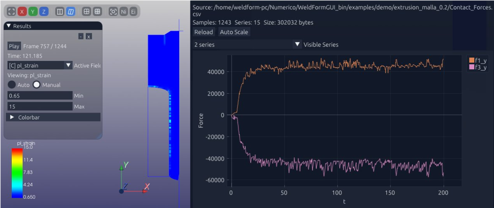

Validation Case: Cold Backward Extrusion
This validation case corresponds to the cold backward extrusion stage of a multi-stage forming sequence. Here we focus on stage 2 of the reference paper, comparing the global load level and the plastic deformation pattern obtained with the present implicit formulation.
Reference paper
The Numerical Study on the Multi-Stage Cold Forming Process of Hexalobular Socket Torx Nuts
Chih-Cheng Yang, Jian-Qing Lu, Hsiu Ying Tsai, Jhonel Cortez Andres
Department of Mechanical and Automation Engineering / Graduate School of Mechatronic Science and Technology, Taiwan Steel University, Taiwan
This benchmark corresponds to stage 2 of the paper. In the reference, the reported forming load is 55 kN, while the plastic deformation keeps the same overall aspect as in the numerical result shown below.
Model setup
- The billet material is modeled with a Hollomon law.
- Material parameters are A = 386.796 MPa and n = 0.154.
- The plastic strain range used for the law is eps in [0, 0.65].
- For strains above 0.65, the flow stress is assumed constant.
- The benchmark is solved as a 2D axisymmetric model.
- A maximum element size of 0.2 mm was used in the tested mesh.
- Zero friction was assumed in this benchmark.
- This differs from the paper because the implicit shear friction formulation is still under study and validation.
Stage 2 comparison

The reference reports a load of 55 kN for this stage. In our current setup, the main point of agreement is the plastic deformation shape, which preserves the same visual pattern as the published result.
For this comparison we used null friction, unlike the paper. That simplification is intentional while the implicit shear friction model is still being studied and validated.
What this benchmark checks
- Material backflow into the punch-controlled cavity
- Load evolution through multiple stages
- Severe contact with changing interface conditions
- Geometric accuracy of the final cold-formed part